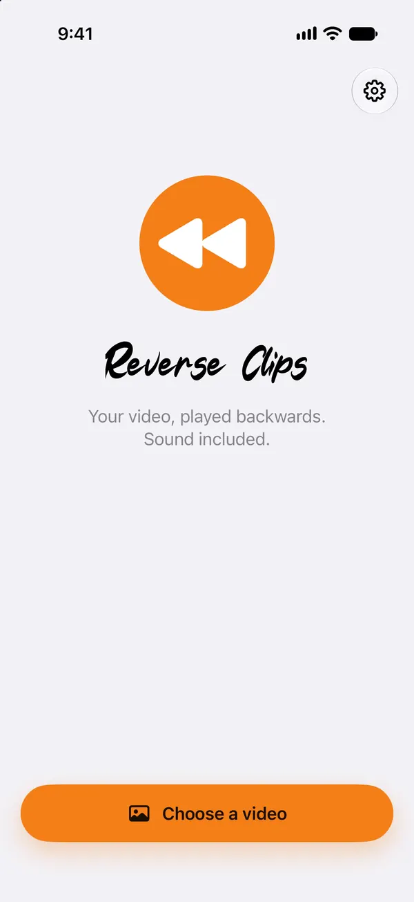
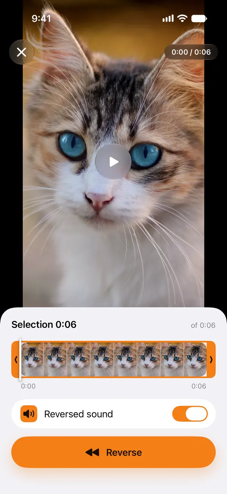
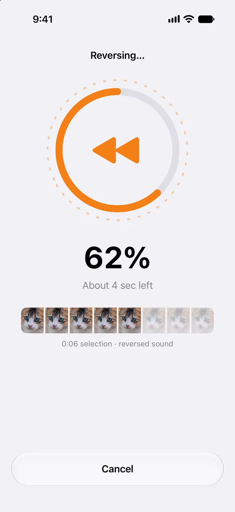
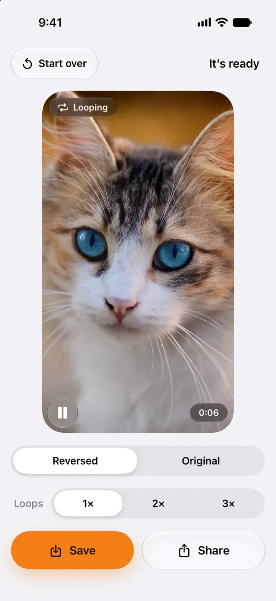

Reverse Clips
Your video, played backwards. Sound included.
Reverse Clips plays any video from your library in reverse, in a few taps. Trim it, loop it, then save it to Photos or share it right away.
Download on the App StoreFor iPhone and iPad, iOS 26 or later. Free with ads.




A video or a Live Photo
Choose a video or a Live Photo from your library, then trim the part you want to reverse.
Reversed sound
The sound is reversed too. Prefer silence? Turn it off for this video, or by default in Settings.
Loop it
Play the result once, twice or three times in a row, and compare it with the original.
Save or share
Save the reversed video to Photos or share it right away.
No length limit
Long videos are reversed piece by piece, with real progress and the time left.
From Photos and Shortcuts
Reverse straight from the Photos share sheet, or from the Shortcuts app with the “Reverse a video” action.
Your privacy first
Reverse Clips only asks to add videos to your library, never to read all of it. Videos are reversed on your device.
For everyone
Dynamic Type, VoiceOver, light and dark modes.
Free, or ad-free
- Free: the whole app, with a banner on the home screen and a full-screen ad while a video is being reversed.
- Premium: a one-time purchase through the App Store, no subscription. It removes the ads for good, and also reverses straight from the share sheet and Shortcuts without opening the app.
- Already bought it? It is still yours: tap “Restore purchase” in Settings.